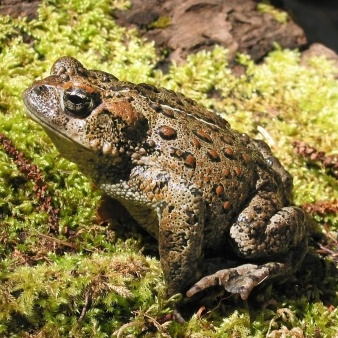

Anaxyrus boreas ssp. halophilus
- Common name
- California Toad
- Family
- Bufonidae
- Family common name
- True toads
- Order
- Anura
- Order common name
- Frogs and Toads
- Taxonomic note:
- This is a subspecies of A. boreas, the Western Toad.
- Habitat and Range
- The California toad occurs from all of Northern California and down south into Baja California. There are scattered populations in isolated desert areas, such as in the Mojave Desert, but they generally do not occur in the desert areas from Death Valley southward. The habitats for the California toad range from woodland, grassland, and meadows in forest areas to backyards and parks in the suburbs. It breeds in lakes, creeks, ponds, reservoirs, slowly flowing streams, and canals.
Range Map
Seasonality